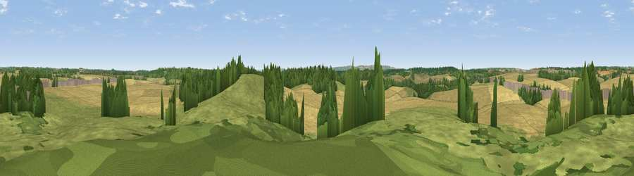

Viewpoint near Boxford
#40622 in England · top 77% of its area beats it · near BoxfordWhere it is
The exact computed spot (SU 43975 72525). Click the marker for map links.
The view, rendered

A 360° render of this exact spot computed from the terrain model, tree cover and land cover — summer colours, afternoon light, calibrated against photographs of famous viewpoints. Real trees, hedges and buildings will differ in detail.
The panorama
Grey silhouette: terrain skyline in each direction (720 bearings, Earth curvature and refraction included). Dashed green: skyline with trees (+15 m) and buildings (+8 m) as obstacles. Blue strip: how far the ground is visible on each bearing.
Where the view opens
Wedge length = distance to the farthest visible ground on that bearing (vegetation-aware). Rings at 10, 25 and 50 km.
What fills the view
47% cropland · 34% grassland · 17% woodland · 1% built-up
Angular shares of the visible panorama (visual magnitude), not map area. Landscape diversity 0.47 (0–1 Shannon).
Key numbers
More beautiful places nearby
The staircase of upgrades: each row has a higher view potential than everything closer. Driving times are estimates from straight-line distance, calibrated against real road routing — check an actual route before setting out.
| Place | Direction | Drive | Score |
|---|---|---|---|
| Hoar Hill | SSW · 2 km | ~4 min | 25.1 |
| Viewpoint near Boxford | SSE · 2 km | ~4 min | 27.0 |
| Viewpoint near Bagnor | SE · 2 km | ~6 min | 33.2 |
| Viewpoint near Donnington | SE · 4 km | ~10 min | 34.0 |
| Viewpoint near Great Shefford | WNW · 6 km | ~12 min | 38.8 |
| Viewpoint near East Garston | WNW · 8 km | ~16 min | 43.9 |
| Viewpoint near Eastbury | NW · 11 km | ~21 min | 48.4 |
| Hodcott Down | NNE · 12 km | ~22 min | 54.7 |
51.45001, -1.36857 · source: screening · position refined by local search. Computed location — check access rights before visiting.